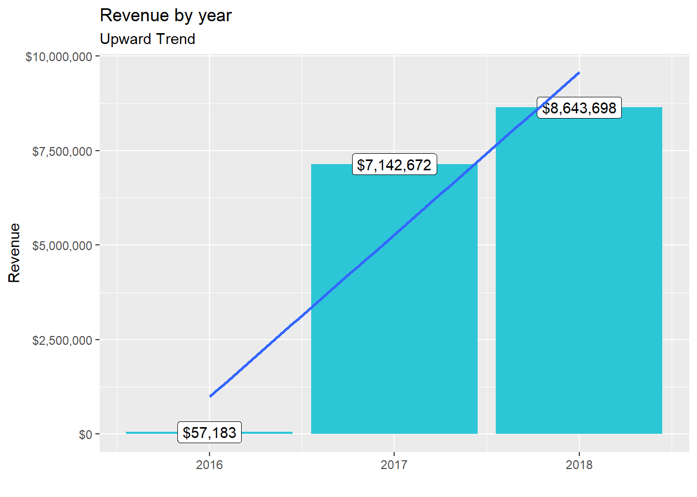

Data Science Fundamentals
Milena Roesch
09/04/2020
2020 | 9 | 3 Last compiled: 2021-03-23
1 Olist - Session 2 - Intro to the tidyverse
The first challenge of the course consisted of two parts: 1. Sales by location and year 2. Redoing the initial analysis using english translations to the product categories
1.1 Sales by location and year
# 1.0 Load libraries ---
library("tidyverse")
library(readr)
# 2.0 Importing files ---
sellers_tbl <- read_csv(file = "00_data/01_e-commerce/01_raw_data/olist_sellers_dataset.csv")
order_items_tbl <- read_csv(file = "00_data/01_e-commerce/01_raw_data/olist_order_items_dataset.csv")
orders_tbl <- read_csv(file = "00_data/01_e-commerce/01_raw_data/olist_orders_dataset.csv")
# 3.0 Examining Data ---
glimpse(sellers_tbl)## Rows: 3,095
## Columns: 3
## $ seller.id <chr> "3442f8959a84dea7ee197c632cb2df15", "d1b65fc...
## $ seller.zip.code.prefix <chr> "13023", "13844", "20031", "04195", "12914",...
## $ seller.location <chr> "campinas, SP", "mogi guacu, SP", "rio de ja...# 4.0 Wrangling data
orders_sellers_joined_tbl <- sellers_tbl %>%
left_join(order_items_tbl) %>%
left_join(orders_tbl)
orders_sellers_wrangled_tbl <- orders_sellers_joined_tbl %>%
separate(col = seller.location,
into = c("city.seller.location", "state.seller.location"),
sep = ", ",
convert = T) %>%
mutate(total.price = freight.value + price) %>%
# Reorganize
select(-shipping.limit.date, -order.approved.at) %>%
select(-starts_with("product.")) %>% #?ends_with --> select helpers
select(-ends_with(".date")) %>%
# Rename
rename(order_date = order.purchase.timestamp) %>%
set_names(names(.) %>% str_replace_all("\\.", "_"))
#Sales by location and year
library(lubridate)
# Step 1 - Manipulate
revenue_by_loc_year_tbl <- orders_sellers_wrangled_tbl %>%
# Select columns
select(order_date, total_price, state_seller_location) %>%
mutate(year = year(order_date)) %>%
# Filter > 1.000.000
group_by(state_seller_location) %>%
filter(sum(total_price) > 1000000) %>%
ungroup() %>%
# Group by and summarize year and main catgegory
group_by(year, state_seller_location) %>%
summarise(revenue = sum(total_price)) %>%
ungroup() %>%
# Format $ Text
mutate(revenue_text = scales::dollar(revenue))
# Step 2 - Visualize
revenue_by_loc_year_tbl %>%
# Set up x, y, fill
ggplot(aes(x = year, y = revenue, fill = state_seller_location)) +
# Geometries
geom_col() +
facet_wrap(~ state_seller_location) +
geom_smooth(method = "lm", se = FALSE) +
scale_y_continuous(labels = scales::dollar) +
labs(
title = "Revenue by year and location",
subtitle = "Each location shows an upward trend",
fill = "Location"
)
1.2 Initial analysis (exercise) using english translations to the product categories
As a continuation of the previous code (same script)
# 1.0 Load libraries ----
#install.packages("readxl")
library("tidyverse")
library(readr)
library(readxl)
# 2.0 Importing Files ----
order_items_tbl <- read_csv(file = "00_data/01_e-commerce/01_raw_data/olist_order_items_dataset.csv")
products_tbl <- read_csv(file = "00_data/01_e-commerce/01_raw_data/olist_products_dataset.csv")
orders_tbl <- read_csv(file = "00_data/01_e-commerce/01_raw_data/olist_orders_dataset.csv")
translation_prod_cat_tbl <- read_excel("00_data/01_e-commerce/01_raw_data/product_category_name_translation.xlsx")
# 3.0 Examining Data ----
glimpse(translation_prod_cat_tbl)## Rows: 71
## Columns: 2
## $ product_category_name <chr> "agro_industria_e_comercio", "aliment...
## $ product.category.name.english <chr> "agro_industry_and_commerce", "food",...products_tbl## # A tibble: 32,951 x 9
## product.id product.categor~ product.name.le~ product.descrip~
## <chr> <chr> <dbl> <dbl>
## 1 1e9e8ef04~ perfumaria 40 287
## 2 3aa071139~ artes 44 276
## 3 96bd76ec8~ esporte_lazer 46 250
## 4 cef67bcfe~ bebes 27 261
## 5 9dc1a7de2~ utilidades_dome~ 37 402
## 6 41d3672d4~ instrumentos_mu~ 60 745
## 7 732bd381a~ cool_stuff 56 1272
## 8 2548af3e6~ moveis - decora~ 56 184
## 9 37cc742be~ eletrodomestico~ 57 163
## 10 8c9210988~ brinquedos 36 1156
## # ... with 32,941 more rows, and 5 more variables: product.photos.qty <dbl>,
## # product.weight.g <dbl>, product.length.cm <dbl>, product.height.cm <dbl>,
## # product.width.cm <dbl>glimpse(orders_tbl)## Rows: 99,441
## Columns: 8
## $ order.id <chr> "e481f51cbdc54678b7cc49136f2d6af7", "...
## $ customer.id <chr> "9ef432eb6251297304e76186b10a928d", "...
## $ order.status <chr> "delivered", "delivered", "delivered"...
## $ order.purchase.timestamp <dttm> 2017-10-02 10:56:33, 2018-07-24 20:4...
## $ order.approved.at <dttm> 2017-10-02 11:07:15, 2018-07-26 03:2...
## $ order.delivered.carrier.date <dttm> 2017-10-04 19:55:00, 2018-07-26 14:3...
## $ order.delivered.customer.date <dttm> 2017-10-10 21:25:13, 2018-08-07 15:2...
## $ order.estimated.delivery.date <dttm> 2017-10-18, 2018-08-13, 2018-09-04, ...#Excurse: Rename
translation_prod_cat_changed_tbl <- translation_prod_cat_tbl %>%
set_names(names(.) %>% str_replace_all("\\_", "."))
# 4.0 Joining Data ----
order_items_joined_tbl <- order_items_tbl %>%
left_join(orders_tbl) %>%
left_join(products_tbl)
order_items_engl_joined_tbl <- order_items_joined_tbl %>%
left_join(translation_prod_cat_changed_tbl)
# 5.0 Wrangling Data ----
order_items_engl_wrangled_tbl <- order_items_engl_joined_tbl %>%
separate(col = product.category.name.english,
into = c("main.category.name", "sub.category.name"),
sep = " - ",
remove = FALSE) %>%
mutate(total.price = price + freight.value) %>%
select(-product.category.name, -shipping.limit.date, order.approved.at) %>%
select(-starts_with("product.")) %>%
select(-ends_with(".date")) %>%
bind_cols(order_items_engl_joined_tbl %>% select(product.id)) %>%
select(contains("timestamp"), contains(".id"),
main.category.name, sub.category.name, price, freight.value, total.price,
everything()) %>%
rename(order_date = order.purchase.timestamp) %>%
set_names(names(.) %>% str_replace_all("\\.", "_"))
# 6.0 Business Insights ----
# 6.1 Sales by Year ----
# Step 1 - Manipulate
library(lubridate)
revenue_by_year_engl_tbl <- order_items_engl_wrangled_tbl %>%
select(order_date, total_price) %>%
mutate(year = year(order_date)) %>%
group_by(year) %>%
summarize(revenue = sum(total_price)) %>%
mutate(revenue_text = scales::dollar(revenue))
# Step 2 - Visualize
revenue_by_year_engl_tbl %>%
ggplot(aes(x = year, y = revenue)) +
geom_col(fill = "#2DC6D6") + # Use geom_col for a bar plot
geom_label(aes(label = revenue_text)) + # Adding labels to the bars
geom_smooth(method = "lm", se = FALSE) + # Adding a trendline
scale_y_continuous(labels = scales::dollar) + # Change the y-axis
labs(
title = "Revenue by year",
subtitle = "Upward Trend",
x = "", # Override defaults for x and y
y = "Revenue"
)
# 6.2 Sales by Year and Category 2 ----
# Step 1 - Manipulate
revenue_by_year_engl_cat_main_tbl <- order_items_engl_wrangled_tbl %>%
select(order_date, total_price, main_category_name) %>%
mutate(year = year(order_date)) %>%
group_by(main_category_name) %>%
filter(sum(total_price) > 1000000) %>% # If you run the code up here, R will tell you that we have 6 groups
ungroup() %>%
group_by(year, main_category_name) %>%
summarise(revenue = sum(total_price)) %>%
ungroup() %>%
mutate(revenue_text = scales::dollar(revenue))
# Step 2 - Visualize
revenue_by_year_engl_cat_main_tbl %>%
ggplot(aes(x = year, y = revenue, fill = main_category_name)) +
geom_col() + # Run up to here to get a stacked bar plot
facet_wrap(~ main_category_name) +
scale_y_continuous(labels = scales::dollar) +
labs(
title = "Revenue by year and main category",
subtitle = "Each product category has an upward trend",
fill = "Main category"
)
# 7.0 Writing Files ---- --> blended out since there is no need to save it for the purpose of the journal
#install.packages("fs")
#library(fs)
#fs::dir_create("00_data/01_e-commerce/04_wrangled_data_student/challenge1")
# 7.1 Excel ----
#install.packages("writexl")
#library("writexl")
#write_xlsx(order_items_wrangled_tbl, "00_data/01_e-commerce/04_wrangled_data_student/challenge1/order_items.xlsx")
# 7.2 CSV ----
#write.csv(order_items_wrangled_tbl, "00_data/01_e-commerce/04_wrangled_data_student/challenge1/order_items.csv")
# 7.3 RDS ----
#saveRDS(order_items_wrangled_tbl, "00_data/01_e-commerce/04_wrangled_data_student/challenge1/order_items.rds")2 Data Scraping from an API and a bike website - Session 3 - Data Acquisition
2.1 Scraping Twitter Data
#install.packages("twitteR") #install package
library(twitteR) #load package
#consumer_key <- #not able to be shown on My Journal Website due to security reasons
#consumer_secret <- #not able to be shown on My Journal Website due to security reasons
#access_token <- #not able to be shown on My Journal Website due to security reasons
#access_secret <- #not able to be shown on My Journal Website due to security reasons
#setup_twitter_oauth(consumer_key, consumer_secret, access_token, access_secret)
#virus <- searchTwitter('#wendlergate', n = 200, since = '2020-09-01', retryOnRateLimit = 1e3)
#virus_df = twListToDF(virus)2.2 Webscraping
# WEBSCRAPING ----
# 1.0 LIBRARIES ----
library(tidyverse) # Main Package - Loads dplyr, purrr
library(rvest) # HTML Hacking & Web Scraping
library(xopen) # Quickly opening URLs
library(jsonlite) # converts JSON files to R objects
library(glue) # concatenate strings
library(stringi) # character string/text processing
library(stringr)
library(RSQLite)
# 2.0 OPEN URL ----
url_home <- "https://www.radon-bikes.de/roadbike/carbon/bikegrid/"
xopen(url_home) # Open links directly from RStudio to inspect them## Running cmd /c start "\"\"" /b \
## "https://www.radon-bikes.de/roadbike/carbon/bikegrid/"# Read in the HTML for category of carbon bikes
html_home <- read_html(url_home)
# 3.0 WEB SCRAPING ----
#Web scrape the product names
product_name_tbl <- html_home %>%
#Get the nodes for the product names ...
html_nodes(css = ".m-bikegrid__info > a > div > h4") %>%
# ...and extract the text of the html attribute
html_text() %>%
# Delete the unnecessary formatting
str_replace_all("[\t\n\r\v\f]" , "") %>%
# Delete whitespace
trimws() %>%
# Convert vector to tibble
enframe(name = "position", value = "product_name")
#Web scrape the product prices
product_price_tbl <- html_home %>%
#Get the nodes for the product prices ...
html_nodes(css = ".currency_eur > .m-bikegrid__price--active") %>%
# ...and extract the information of the span attribute
html_text("span") %>%
# Convert vector to tibble
enframe(name = "position", value = "product_price")
# 4.0 DATABASE ----
# Create a database
conn <- RSQLite::dbConnect(drv = SQLite(),
dbname = "00_data/03_bike_shop/Radon_carbon_bikes.sqlite")
# Write tables to database
dbWriteTable(conn, "bike_names", product_name_tbl, overwrite=TRUE)
dbWriteTable(conn, "bike_prices", product_price_tbl, overwrite=TRUE)
# List tables of database
# dbListTables(conn)
# Get price and respective product Name from database
dbGetQuery(conn, "SELECT product_name, product_price FROM bike_names, bike_prices WHERE bike_names.position = bike_prices.position")## product_name product_price
## 1 SPIRE DISC 8.0 2029 \200
## 2 SPIRE DISC 9.0 2629 \200
## 3 SPIRE DISC 10.0 3329 \200
## 4 VAILLANT DISC 8.0 2029 \200
## 5 VAILLANT DISC 9.0 2629 \200
## 6 VAILLANT DISC 10.0 3549 \200dbDisconnect(conn)3 Data Wrangling with Patent Data - Session 4 - Data Wrangling
# 1.0 LIBRARIES ----
#install.packages("data.table")
#install.packages("vroom")
#install.packages("tictoc")
# Tidyverse
library(tidyverse)
library(vroom)
# Data Table
library(data.table)
# Counter
library(tictoc)
# Importing Data ------
# assignee
col_types <- list(
id = col_character(),
type = col_skip(),
name_first = col_skip(),
name_last = col_skip(),
organization = col_character()
)
assignee_tbl <- vroom(
file = "00_data/04_patents/assignee.tsv",
delim = "\t",
col_names = names(col_types),
col_types = col_types,
na = c("", "NA", "NULL")
)
setDT(assignee_tbl)
# patent assignee
col_types <- list(
patent_id = col_character(),
assignee_id = col_character(),
location_id = col_skip()
)
patent_assignee_tbl <- vroom(
file = "00_data/04_patents/patent_assignee.tsv",
delim = "\t",
col_names = names(col_types),
col_types = col_types,
na = c("", "NA", "NULL")
)
setDT(patent_assignee_tbl)
# patent
col_types <- list(
id = col_character(),
type = col_skip(),
number = col_skip(),
country = col_skip(),
date = col_date("%Y-%m-%d"),
abstract = col_skip(),
title = col_skip(),
kind = col_skip(),
num_claims = col_skip(),
filename = col_skip(),
withdrawn = col_skip()
)
patent_tbl <- vroom(
file = "00_data/04_patents/patent.tsv",
delim = "\t",
col_names = names(col_types),
col_types = col_types,
na = c("", "NA", "NULL")
)
setDT(patent_tbl)
# uspc
col_types <- list(
uuid = col_skip(),
patent_id = col_character(),
mainclass_id = col_character(),
subclass_id = col_skip(),
sequence = col_skip()
)
uspc_tbl <- vroom(
file = "00_data/04_patents/uspc.tsv",
delim = "\t",
col_names = names(col_types),
col_types = col_types,
na = c("", "NA", "NULL")
)
setDT(uspc_tbl)
# mainclass description
col_types <- list(
id = col_character(),
title = col_character())
mainclass_current_tbl <- vroom(
file = "00_data/04_patents/mainclass_current.tsv",
delim = "\t",
col_names = names(col_types),
col_types = col_types,
na = c("", "NA", "NULL")
)
setDT(mainclass_current_tbl)
# Change of column names to avoid misalignment
setnames(patent_assignee_tbl, "assignee_id", "id")
setnames(patent_tbl, "id", "patent_id")
setnames(mainclass_current_tbl, "id", "mainclass_id")
# Joining tables -----
# Combine assignee_tbl with patent_assignee_tbl
combined_patent_patent_assignee_tbl <- merge(x = assignee_tbl, y = patent_assignee_tbl,
by = "id",
all.x = TRUE,
all.y = FALSE)
setDT(combined_patent_patent_assignee_tbl)
rm(assignee_tbl, patent_assignee_tbl)
gc()## used (Mb) gc trigger (Mb) max used (Mb)
## Ncells 11844811 632.6 25676368 1371.3 11914280 636.3
## Vcells 111885876 853.7 180541839 1377.5 155252214 1184.5# Combine result with patent_tbl
combined_patent_patent_assignee_patent_tbl <- merge(x = combined_patent_patent_assignee_tbl, y = patent_tbl,
by = "patent_id",
all.x = TRUE,
all.y = FALSE)
setDT(combined_patent_patent_assignee_patent_tbl)
rm(combined_patent_patent_assignee_tbl, patent_tbl)
gc()## used (Mb) gc trigger (Mb) max used (Mb)
## Ncells 11652993 622.4 25676368 1371.3 11914280 636.3
## Vcells 104092358 794.2 180541839 1377.5 178577817 1362.5# Combine result with uspc_tbl
combined_patent_patent_assignee_patent_uspc_tbl <- merge(x = combined_patent_patent_assignee_patent_tbl, y = uspc_tbl,
by = "patent_id",
all.x = TRUE,
all.y = FALSE)
setDT(combined_patent_patent_assignee_patent_uspc_tbl)
rm(combined_patent_patent_assignee_patent_tbl, uspc_tbl)
gc()## used (Mb) gc trigger (Mb) max used (Mb)
## Ncells 10976984 586.3 25676368 1371.3 11914280 636.3
## Vcells 134128534 1023.4 289217582 2206.6 248906759 1899.1# Combine result with mainclass_current_tbl
combined_patent_data_tbl <- merge(x = combined_patent_patent_assignee_patent_uspc_tbl, y = mainclass_current_tbl,
by = "mainclass_id",
all.x = TRUE,
all.y = FALSE)
setDT(combined_patent_data_tbl)
rm(combined_patent_patent_assignee_patent_uspc_tbl, mainclass_current_tbl)
gc()## used (Mb) gc trigger (Mb) max used (Mb)
## Ncells 10977005 586.3 25676368 1371.3 11914280 636.3
## Vcells 153328286 1169.9 358913784 2738.3 327244346 2496.7# Preparing the data table -----
setkey(combined_patent_data_tbl, "organization", "date", "mainclass_id")
key(combined_patent_data_tbl)## [1] "organization" "date" "mainclass_id"?setorder()
setorderv(combined_patent_data_tbl, c("organization", "date", "mainclass_id"))
# 1 - Top 10 US organizations with the most patents -----
combined_patent_data_tbl %>%
group_by(id)%>%
filter(!is.na(organization))%>%
count(organization, sort = TRUE)%>%
head(n = 10)## # A tibble: 10 x 3
## # Groups: id [10]
## id organization n
## <chr> <chr> <int>
## 1 org_ONzMjdbZXiKfw4L0cXl6 International Business Machines Corporation 345118
## 2 org_pCbqlmAg8wlWzoi18ITD Samsung Electronics Co., Ltd. 204838
## 3 org_eAKK85fawH0NS7AdXOig Canon Kabushiki Kaisha 187338
## 4 org_rWEJSmVQtQg24yFJqVRb General Electric Company 145473
## 5 org_yOSqt2KbCZQB2LRNpEKS Hitachi, Ltd. 140677
## 6 org_EccJQIigrq4WyGinD0b8 Kabushiki Kaisha Toshiba 139423
## 7 org_g8U335TH48QmGJOIQnNl Sony Corporation 138638
## 8 org_f0ZEyISdLqKONLOyVOev Fujitsu Limited 103374
## 9 org_OrmhECOcsM3rq5b7Pxfe Intel Corporation 98653
## 10 org_WX2Md025ShOVLD08FWsB Matsushita Electric Industrial Co., Ltd. 98038# 2 - Top 10 US organizations with the most patents in 2019 ----
combined_patent_data_tbl %>%
group_by(id)%>%
filter(!is.na(organization))%>%
filter(year(date) == 2019)%>%
count(organization, sort = TRUE)%>%
head(n = 10)## # A tibble: 10 x 3
## # Groups: id [10]
## id organization n
## <chr> <chr> <int>
## 1 org_ONzMjdbZXiKfw4L0cXl6 International Business Machines Corporation 9265
## 2 org_pCbqlmAg8wlWzoi18ITD Samsung Electronics Co., Ltd. 7215
## 3 org_eAKK85fawH0NS7AdXOig Canon Kabushiki Kaisha 3595
## 4 org_OrmhECOcsM3rq5b7Pxfe Intel Corporation 3534
## 5 org_dfvuIWENawcU6lTd1Z3w LG Electronics Inc. 3317
## 6 org_H7LOm1ExbYhoyoa0saj4 Microsoft Technology Licensing, LLC 3106
## 7 org_MO6EJRM1uhBUFxIjWimJ Apple Inc. 2869
## 8 org_OLHrQpW94MhYqmfa2oPi Ford Global Technologies, LLC 2624
## 9 org_EIkIzlWRWMxJjhgkIAoX Amazon Technologies, Inc. 2544
## 10 org_OphuBrUyASm8ZMSfynyF Huawei Technologies Co., Ltd. 2454# 3 - Top 5 USPTO Classes of top 10 organizations ----
combined_patent_data_tbl %>%
select(id, organization, mainclass_id, title)%>%
group_by(id)%>%
filter(!is.na(organization))%>%
filter(!is.na(mainclass_id))%>%
filter(title != "DOES NOT EXIST") %>%
filter(title != "unclassified") %>%
count(organization, title, sort = TRUE)%>%
head(n = 10)## # A tibble: 10 x 4
## # Groups: id [9]
## id organization title n
## <chr> <chr> <chr> <int>
## 1 org_lyNcyopx~ Fuji Photo Film Co., Ltd. RADIATION IMAGERY CHEMISTRY: P~ 24973
## 2 org_ONzMjdbZ~ International Business M~ ACTIVE SOLID-STATE DEVICES (E.~ 21754
## 3 org_cCD27JtU~ Bayer Aktiengesellschaft ORGANIC COMPOUNDS -- PART OF T~ 21710
## 4 org_8WujSDQF~ Eastman Kodak Company RADIATION IMAGERY CHEMISTRY: P~ 19628
## 5 org_pCbqlmAg~ Samsung Electronics Co.,~ ACTIVE SOLID-STATE DEVICES (E.~ 19522
## 6 org_eAKK85fa~ Canon Kabushiki Kaisha FACSIMILE AND STATIC PRESENTAT~ 18826
## 7 org_Ax4AmmkQ~ Micron Technology, Inc. SEMICONDUCTOR DEVICE MANUFACTU~ 18664
## 8 org_Ax4AmmkQ~ Micron Technology, Inc. ACTIVE SOLID-STATE DEVICES (E.~ 18132
## 9 org_EccJQIig~ Kabushiki Kaisha Toshiba ACTIVE SOLID-STATE DEVICES (E.~ 18012
## 10 org_r7L34966~ BASF Aktiengesellschaft ORGANIC COMPOUNDS -- PART OF T~ 173884 Data Visualization of COVID Data - Session 5 - Data Visualization
library(tidyverse)
library(lubridate)
library(maps)
library(scales)
covid_data_tbl <- read_csv("https://opendata.ecdc.europa.eu/covid19/casedistribution/csv")
# Challenge 1 -----------------
# Format data ----
cumulative_cases_by_day_tbl <- covid_data_tbl %>%
select(dateRep, cases, countriesAndTerritories) %>%
filter(countriesAndTerritories %in% c("Germany","United_Kingdom", "France", "Spain", "United_States_of_America")) %>%
# Grouping by country & date, and cumulatively summarize number of cases
group_by(countriesAndTerritories) %>%
mutate(dateRep = as.Date(dateRep, "%d/%m/%Y")) %>%
arrange(dateRep) %>%
mutate(cumulative_cases = cumsum(cases)) %>%
ungroup()
#cumulative_cases_by_day_tbl
# Plot ----
cumulative_cases_by_day_tbl %>%
ggplot(aes(x = dateRep, y = cumulative_cases, color = countriesAndTerritories)) +
geom_line(size = 1) +
scale_color_brewer(palette = "Accent") +
labs(
title = "COVID-19 confirmed cases worldwide",
subtitle = "As of 11/2020",
x = "Year 2020",
y = "Confirmed CoVID-19 cases",
color = "Country"
) +
theme_gray() +
theme(legend.position = "right",
legend.direction = "vertical",
plot.title = element_text(face = "bold"),
axis.text.x = element_text(angle = 45)) +
scale_x_date(
date_breaks = "1 month", date_labels = "%B",
date_minor_breaks = "1 month"
) +
scale_y_continuous(
breaks = seq(0, 15000000, by = 2500000),
labels = scales::label_number_si(accuracy = 0.1),
minor_breaks = seq(0, 10000000, by = 1250000)
)# Challenge 2 ----------
world <- map_data("world")
cumulative_deaths_per_country_tbl <- covid_data_tbl %>%
select(popData2019, deaths, countriesAndTerritories) %>%
group_by(countriesAndTerritories) %>%
summarise(total_deaths = sum(deaths), population_2019 = median(popData2019)) %>%
ungroup() %>%
mutate(across(countriesAndTerritories, str_replace_all, "_", " ")) %>%
mutate(countriesAndTerritories = case_when(
countriesAndTerritories == "United Kingdom" ~ "UK",
countriesAndTerritories == "United States of America" ~ "USA",
countriesAndTerritories == "Czechia" ~ "Czech Republic",
TRUE ~ countriesAndTerritories
)) %>%
mutate (mortality_rate = total_deaths/population_2019) %>%
rename("region" = "countriesAndTerritories")
world_mortality_rate_covid <- left_join(world, cumulative_deaths_per_country_tbl)
#
ggplot(world_mortality_rate_covid) +
geom_map(aes(map_id = region, fill = mortality_rate), map = world_mortality_rate_covid, data = world_mortality_rate_covid) +
expand_limits(x = world_mortality_rate_covid$long, y = world_mortality_rate_covid$lat) +
labs(
title = "Mortality rate of COVID-19 worldwide",
subtitle = "As of 11/2020",
x = NULL,
y = NULL,
fill = "Mortality Rate"
) +
theme(
axis.text = element_blank(),
axis.line = element_blank(),
axis.ticks = element_blank(),
panel.border = element_blank(),
panel.grid = element_blank(),
axis.title = element_blank()
) +
scale_fill_gradient(
low = "#D80000",
high = "#3F0000",
space = "Lab",
na.value = "grey50",
guide = "colourbar",
aesthetics = "fill",
breaks = seq(0.0000, 0.0012, by=0.0003),
labels = scales::percent_format(accuracy = 0.001)
)